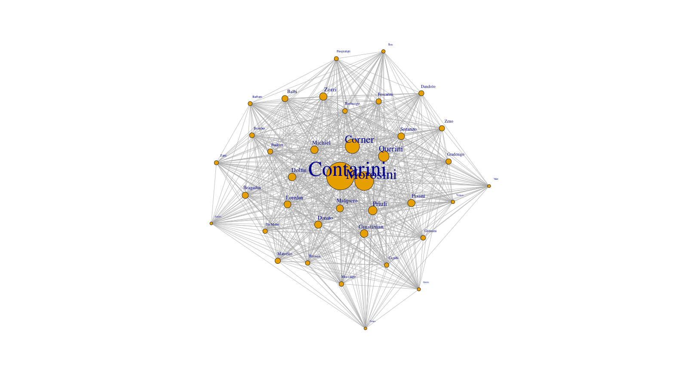
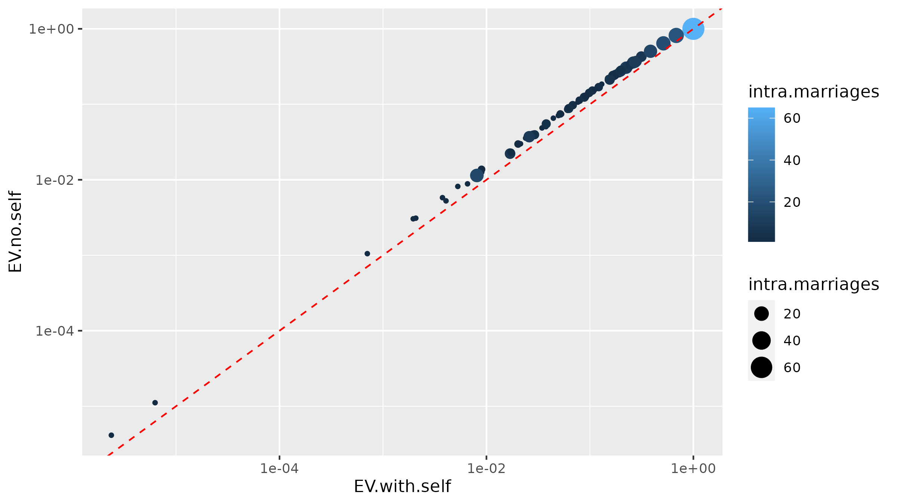
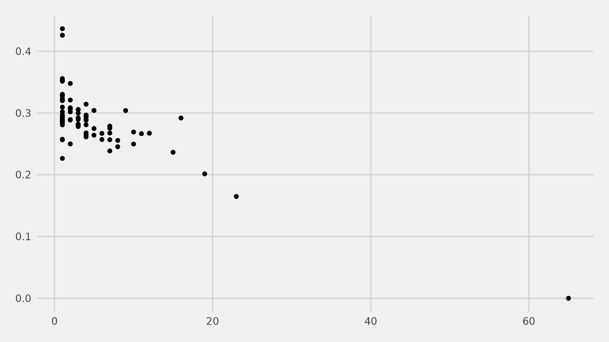
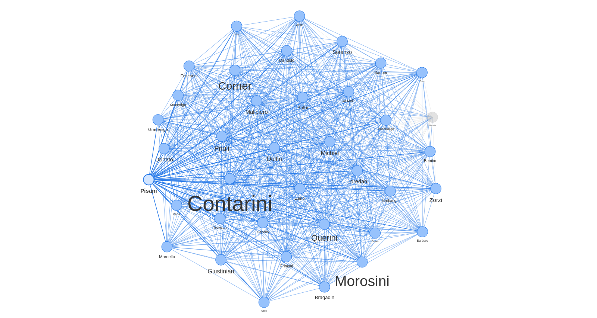

Self-loops in social networks: behavior of eigenvector centrality
JJ Merelo (UGR-ES)
Wivace, 2023
Let me tell you about the Contarinis

But there were many Contarinis
Del Nasso, degli Scrigni, del Bovolo, San Silvestro, dal Zaffo, della Porta di Ferro
With many intra-family marriages
| Family |
Intra-family marriages |
| Contarini |
65 |
| Morosini |
23 |
| Corner |
19 |
| Martinengo |
16 |
| Querini |
15 |
| Balbi |
12 |
| Donato |
11 |
| Malipiero |
10 |
| Zorzi |
10 |
| Zancaruol |
9 |
How would these self-loops affect betweenness measurements?
We don't know: most measurements drop them, or are not affected by them.
Eigenvector centrality uses self-loops
Diagonal values in the adjacency matrix
How does it change with/without these diagonal values
How does it affect the Contarinis?
| Family |
EV |
Family |
EV with self-loops |
| Contarini |
1.0000000 |
Contarini |
1.0000000 |
| Morosini |
0.8175570 |
Morosini |
0.6827832 |
| Corner |
0.6425724 |
Corner |
0.5131463 |
| Querini |
0.5045249 |
Querini |
0.3852909 |
| Priuli |
0.4286878 |
Priuli |
0.3139764 |
| Dolfin |
0.3771834 |
Giustinian |
0.2806501 |
| Giustinian |
0.3719008 |
Dolfin |
0.2775836 |
| Michiel |
0.3692852 |
Michiel |
0.2743379 |
| Zorzi |
0.3629267 |
Zorzi |
0.2723025 |
| Loredan |
0.3593036 |
Pisani |
0.2649323 |
Change in EV centrality

Decreases with intra-family weddings

Who are the Pisani?
Big family, several branches (including "del Banco")
8 intra-family weddings (vs 4 the Loredan)
The Pisanis: A well connected family

Are betweenness measurements artifacts, or grounded in reality?
If the latter, we should use all data
It seems to set the record straight (Giustinian vs. Dolfin; Loredan vs. Pisani)
Vi ringrazio per la vostra attenzione